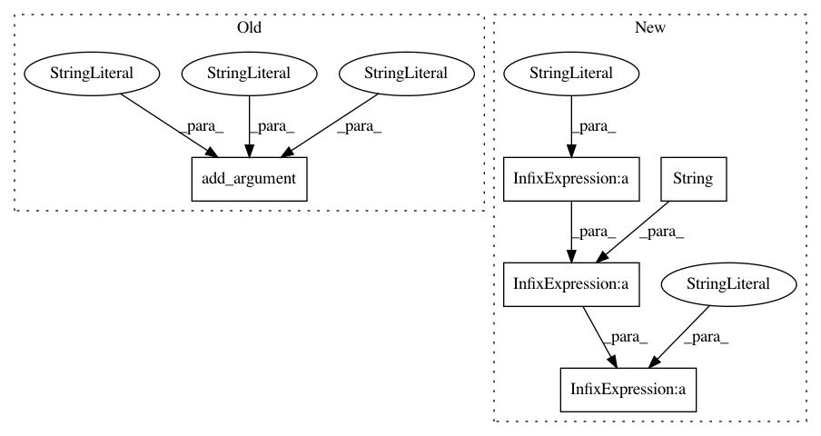

3aea1bad7b8bbd2a581924e6884bbbd897f0f831,pynets/pynets_run.py,,,#,16
Before Change
metavar="Path to mask image",
default=None,
help="Optionally specify a thresholded inverse-binarized mask image such as a group ICA-derived network volume, to retain only those network nodes contained within that mask")
parser.add_argument("-model",
metavar="Graph estimator",
default="corr",
help="Optionally specify matrix estimation type: corr, cov, sps, partcorr, or tangent for correlation, covariance, sparse-inverse covariance, partial correlation, and tangent, respectively")
parser.add_argument("-confounds",
metavar="Confounds",
default=None,
help="Optionally specify a path to a confound regressor file to improve in the signal estimation for the graph")
After Change
wf.config["logging"]["interface_level"]="DEBUG"
//plugin_args = { "n_procs": int(procmem[0]),"memory_gb": int(procmem[1]), "status_callback" : log_nodes_cb}
plugin_args = { "n_procs": int(procmem[0]),"memory_gb": int(procmem[1])}
print("\n" + "Running with " + str(plugin_args) + "\n")
wf.run(plugin="MultiProc", plugin_args= plugin_args)
//wf.run()
In pattern: SUPERPATTERN
Frequency: 3
Non-data size: 5
Instances
Project Name: dPys/PyNets
Commit Name: 3aea1bad7b8bbd2a581924e6884bbbd897f0f831
Time: 2018-01-02
Author: dpisner@utexas.edu
File Name: pynets/pynets_run.py
Class Name:
Method Name:
Project Name: reinforceio/tensorforce
Commit Name: 1bc48fb2f66ecaa22107504658037d111c278eb7
Time: 2017-03-06
Author: mi.schaarschmidt@gmail.com
File Name: tensorforce/examples/async_helper.py
Class Name:
Method Name: main
Project Name: dPys/PyNets
Commit Name: 96e482fd26c87a9d54ac1c8c53e00a93a2c6df2e
Time: 2017-11-04
Author: dpisner@utexas.edu
File Name: pynets/pynets_run.py
Class Name:
Method Name: